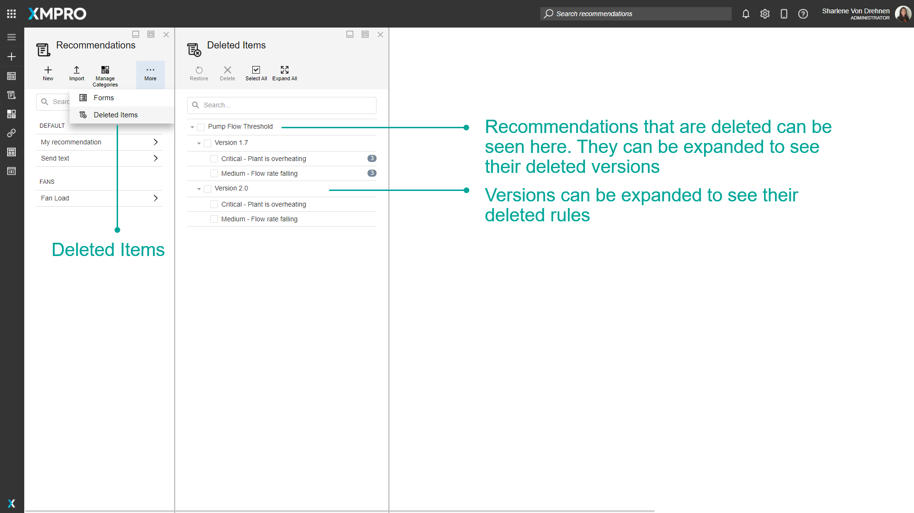
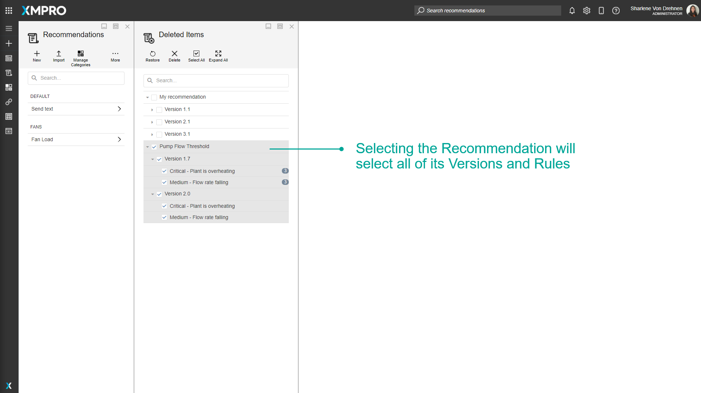
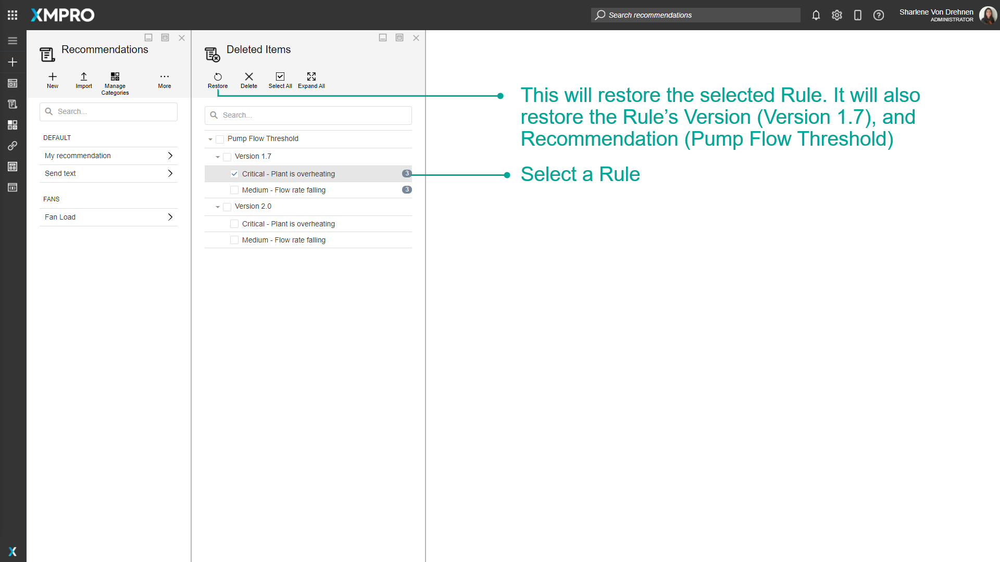

Deleted Items
When you delete a Recommendation, there may be archived Recommendation Alerts created by that Recommendation that you don't want to delete. In order to facilitate this, deleting a Recommendation, Recommendation Version, or Rule will move the item to the Deleted Items.
Items that are deleted will not generate new Recommendation Alerts, and will not be visible in other areas of the App Designer and Data Stream Designer. For example, deleted items will not show when selecting a Recommendation to filter on in the Recommendations Block or Stream Objects.
Deleting the Recommendation itself will also delete all versions and rules within that Recommendation. Deleting a version will also delete all rules within the version. The Recommendation itself will not be deleted, and only the deleted version and rules will show in the deleted items list.

Deleted items can be accessed through the Deleted Items button on the Recommendations page.

Note
Items that have not been deleted don't have a select box, and cannot be restored or permanently deleted.
Alert Count Column
When you view deleted items, an Alert Count Column will be displayed next to the items. This will show the number of Alerts that were triggered previously for the deleted Rule.
Clicking on an Alert Count for a deleted Rule will display the list of Alerts in the Recommendation Alerts table.

Selection
Selecting a Recommendation will select and expand all Versions and Rules for that Recommendation.

Selecting a Version will select and expand all the Rules for that Version.

When an item is deselected, only that item will be deselected. For example, if you deselect a Recommendation, only the recommendation will be deselected. The Version and Rules for that Recommendation will remain selected.
Similarly, if you deselect a Version, only the Version will be deselected. Any rules for that Version will remain selected.
If all Versions are deselected in a Recommendation, that Recommendation will be deselected, as you cannot have a Recommendation without a Version.
Restore Items
To restore items, select them and press the Restore button. Restored items will return to their original state before being deleted. Restored items will start generating Recommendation Alerts if the Recommendation is published.
It is possible to restore an item while its parent item is still deleted. In this case, the restored item will not be visible anywhere but will become visible when the parent item is restored.

If you restore an item without selecting the parents of the item, the parents will be restored as well. For example, if you select a Rule (and do not select its version or Recommendation), the Rule will be restored and the version and recommendation will still be automatically restored as well, even if they were not selected.

Permanently Delete Items
Warning
Warning! Recommendation Alerts will also be permanently deleted when permanently deleting items.
To permanently delete items, select them and press Delete. The items, any child items, and any Recommendation Alerts generated from them will be deleted forever.
Actions on the Deleted Items
| Action | Description |
|---|---|
| Restore | Restores the Deleted item. |
| Delete | Permanently deletes the item. |
| Select All | Toggles between selecting and deselecting all the items in the deleted items list. |
| Expand All | Expands all Recommendations and Versions to see all Versions and Rules underneath. |
| Collapse All | Collapses any already expanded Recommendations. |
Further Reading
Last modified: July 17, 2025